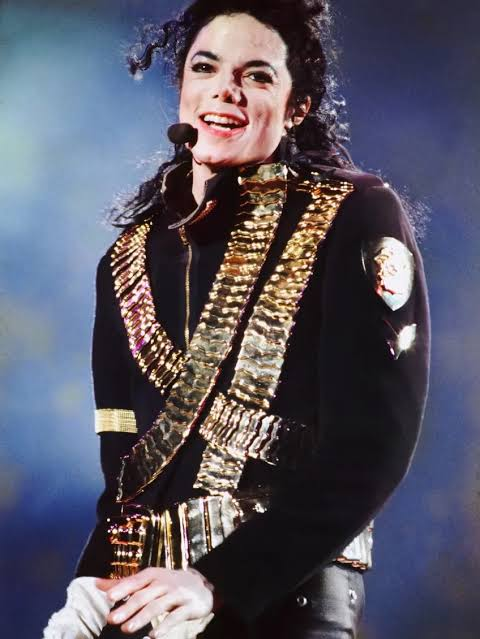

O cantor estadunidense Michael Jackson, cujo o nome completo era Michael Joseph Jackson, nasceu em Gary, Indiana, no dia 29 de Agosto de 1958. Ele era filho de Katherine Jackson, ainda viva, e Joseph Jackson, falecido em 2018. Ele tinha diversos irmãos, em especial, os irmãos que depois fizeram grupo com ele, no caso: Marlon Jackson, Tito Jackson, Jermaine Jackson, Randy Jackson, Jackie Jackson. Além disso, ele também tinha duas irmãs que ficaram famosas no futuro: Janet Jackson e LaToya Jackson. Sua carreira começa nos anos 60, com seu pai descobrindo o talento dos irmãos em casa, porém não de uma forma boa. Os irmãos não podiam sair de casa e ficavam incessantemente ensaiando, e se algo desse errado, era cintada na bunda.
Em 1969, o Jackson 5 é apadrinhado por Diana Ross e a Motown Records, e assim eles lançam 16 álbuns. Desses 16 álbuns, 4 álbuns são álbuns solo de Michael, onde ele não tinha total controle sua carreira até então, no caso "Got To Be There" (1972), "Ben" (1972), "Music and Me" (1973) e "Forever, Michael" (1975), até que eles saem para a Epic Records, e o irmão Jermaine Jackson fica na Motown, e então Randy Jackson entra no grupo. Michael já queria ter um controle maior sobre as próprias músicas e o controle criativo dos álbuns. Então a Epic Records concorda, mas até o 1984, ele permaneceu no The Jacksons. Com os Jacksons (o grupo teve que mudar o nome porque a marca "Jackson 5" era propriedade da Motown) eles lançam 5 álbuns com Michael ainda no grupo: "The Jacksons" (1976), "Goin' Places" (1977), "Destiny" (1978), "Triumph" (1980) e "Victory" (1984).
Na Epic, Michael lança 6 álbuns, 2 enquanto a Epic era independente e 4 depois que a Sony comprou a Epic. Esses 6 álbuns são os mais conhecidos, são eles: "Off The Wall" (1979), "Thriller" (1982), "Bad" (1987), "Dangerous" (1991), "HIStory: Past, Present and Future - Book I" (1995) e "Invincible" (2001), sendo o último o álbum mais caro de todos os tempos. Michael ficou no The Jacksons até 1984, após as turnês "Destiny World Tour" (1979-1980), "Triumph Tour" (1981) e "Victory Tour" (1984). Michael fez mais três turnês solo após essas, sendo elas a "Bad World Tour" (1987-1989), "Dangerous World Tour" (1992-1993), sendo essa a única que passou pelo brasil em outubro de 1993, e a "HIStory World Tour" (1996-1997).
Ele fez algumas outros shows após 1997, tirando performances em programas de TV, por exemplo os shows "MJ & Friends" (1999), que aconteceram na Coréia do Sul e Alemanha. Depois, em 2001, para comemorar 30 anos do lançamento do primeiro single, Michael fez dois shows especiais no Madison Square Garden, chamados de "Michael Jackson: 30th Anniversary Celebration", e ainda em 2001, ele fez o concerto "United We Stand: What More Can I Give" que foi em tributo às vítimas dos ataques de 11 de setembro de 2001. Depois disso, Michael Jackson fez aquele que seria, sem ele saber, a última grande performance de sua vida, o "Michael Jackson: Live at the Apollo" (2002), que foi um show para financiar o Comitê Nacional Democrata de Bill Clinton.
Após a apresentação no Apollo Theater em 2002, Michael Jackson afastou-se progressivamente dos holofotes e dos palcos. Nos anos seguintes, o artista manteve um perfil discreto e quase nenhum envolvimento com grandes performances ao vivo, mudando-se temporariamente para o Bahrein em 2005 para buscar privacidade e reconectar-se com sua rotina pessoal. Foi somente em meados de 2006 que ele começou a fazer aparições públicas pontuais, como ao receber o Chopard Diamond Award no World Music Awards em Londres, sinalizando aos poucos que seu ciclo longe da música estava prestes a terminar.
O retorno definitivo começou a ganhar força entre 2008 e o início de 2009, quando Michael anunciou a residência de shows This Is It. Planejada para acontecer na O2 Arena, em Londres, a turnê marcaria sua despedida oficial dos palcos. A demanda foi tão avassaladora que os 10 shows inicialmente previstos se transformaram em 50 datas totalmente esgotadas em questão de horas. Sob uma produção grandiosa e inovadora, Michael mergulhou em rotinas intensas de ensaios em Los Angeles para entregar o maior espetáculo de sua carreira, preparando o terreno para aquele que seria o seu ato final.